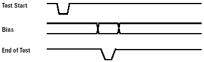

Parallel interface timing
The GPIO interface cards have 16 bits of input ("DI" lines), 16 bits of output ("DO" lines) and various control lines. These signals allow the system controller to detect when the equipment is ready and to communicate the completion of a test as well as the test results.
The figure below depicts a generalized set of signals and timings of the type of protocol that is used on most equipment.

The equipment issues a "Test Start" signal, which is usually active low. This signal stays low for about 1 millisecond. The test system is expected to acknowledge the "Test Start" by performing the test, placing the result on data lines called "Bins", and then issuing an "End of Test" signal, which stays low for about 3 milliseconds.
This process is repeated for as many packages as is necessary to complete the lot. These signals occur asynchronously and there is flexibility in the pulse width.